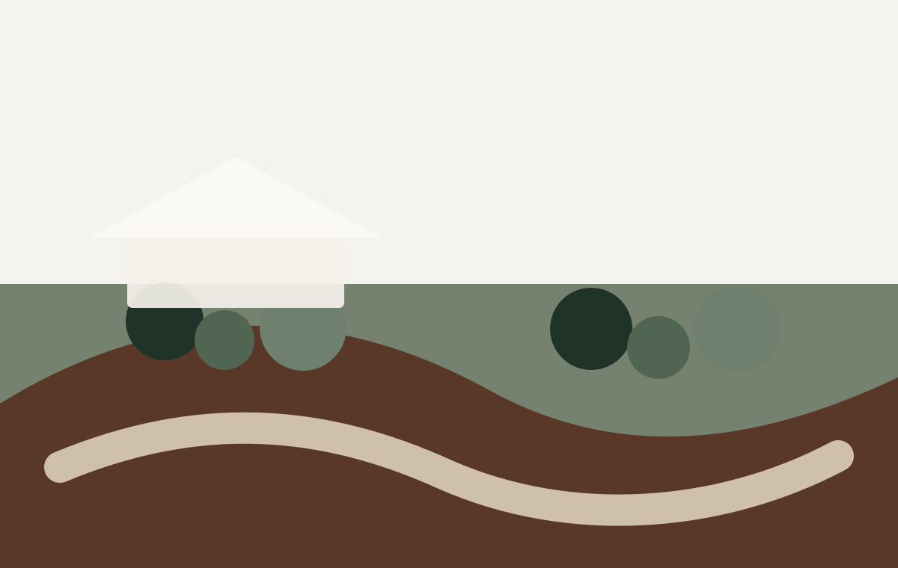
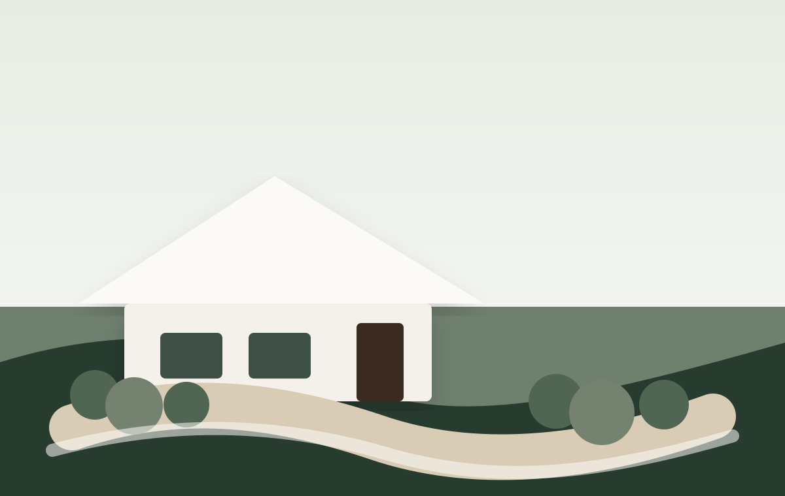
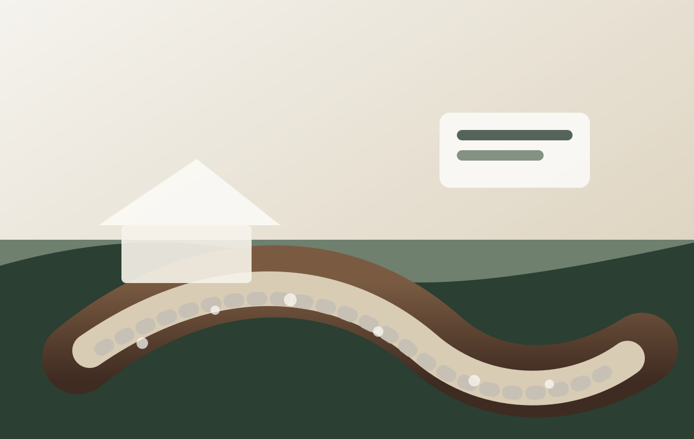

Standing water near the house
French drains, grading, and drainage corrections help move water away from areas where it causes problems.
Fix a Drainage ProblemCEW Landscape · Northwest Arkansas
CEW Landscape helps homeowners improve curb appeal, fix water issues, install healthy landscapes, and build outdoor spaces that work for the property.
Started in 2020. Backed by 20+ years of Northwest Arkansas landscape experience.


Common Problems We Fix
Many outdoor projects are not just about making the yard look better. They are about fixing water, grade, growth, access, and usability problems.
French drains, grading, and drainage corrections help move water away from areas where it causes problems.
Fix a Drainage ProblemBed design, planting, mulch, rock, edging, and cleanup can make the property feel intentional and finished.
Improve My YardIrrigation, sod, lawn improvements, and better planning help support a cleaner, healthier landscape.
Ask About IrrigationPatios, retaining walls, outdoor kitchens, water features, and grading can turn difficult spaces into useful areas.
Plan an Outdoor SpaceBefore & After
Drag across the images to compare common project transformations. Real CEW project photos can replace these as they are gathered.
View More Projects
Move water away from problem areas and restore the surrounding landscape.
Improve curb appeal with cleaner beds, better layout, and details that fit the home.
Why CEW
CEW combines design thinking with practical installation knowledge, which matters when a project needs to look good and solve real property problems.
Local knowledge helps with grading, drainage, plants, soil, and property conditions.
Landscape architecture training helps projects feel planned instead of pieced together.
Water problems, grading, irrigation, sod, beds, and repair work can be planned as one project.
Clients can get practical recommendations that fit the home, neighborhood, and project goals.
Northwest Arkansas
CEW works with homeowners across Northwest Arkansas on drainage corrections, irrigation, sod, front yard landscaping, retaining walls, patios, and outdoor improvements.
Testimonials
Chad and his crew did a great job on our new French drain and surrounding landscape. Will be calling on him again, soon!!
Erica H.
He listened to what we wanted, made suggestions at different price points, and made sure the yard looked cohesive with the neighborhood.
Hillary W.
CEW handled landscaping, irrigation, and sod for us. They can do it all the right way. Highly recommended and we will use them again.
Ben W.
Get a quote